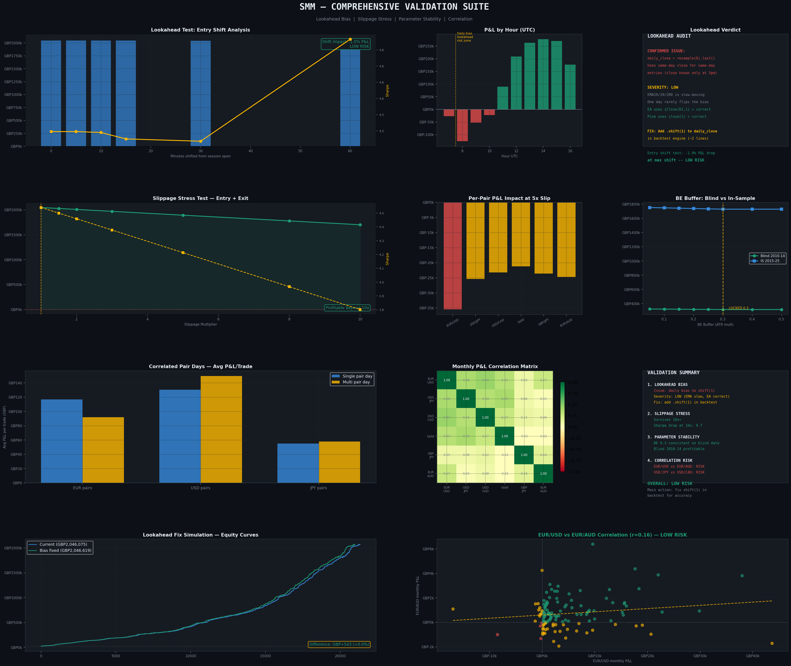
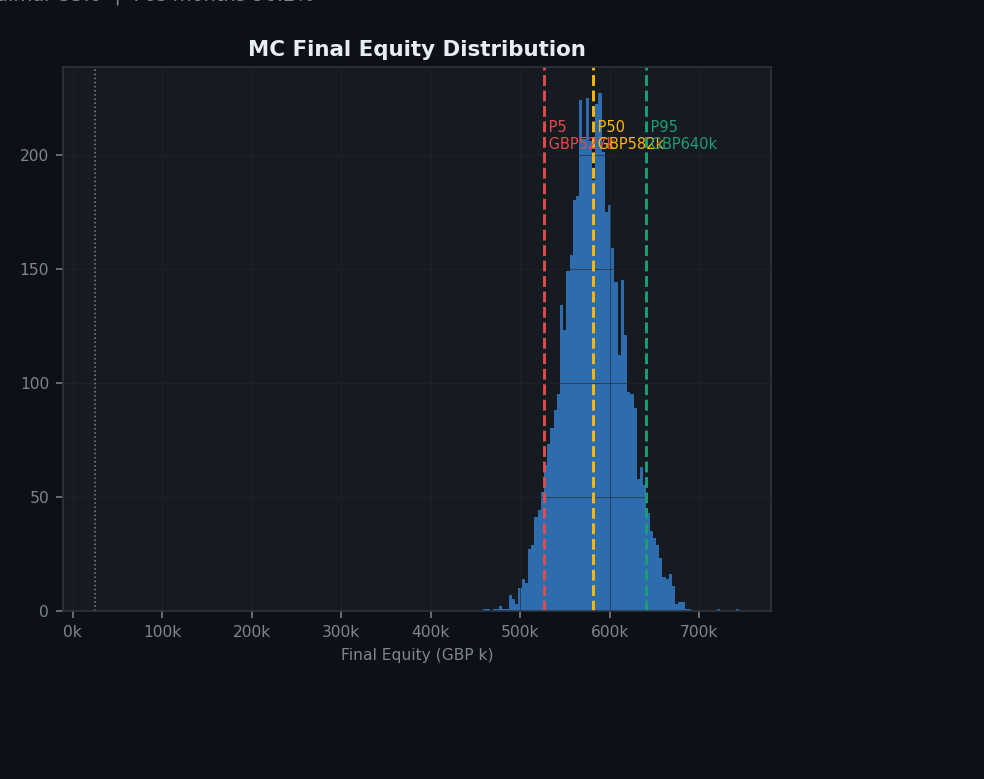
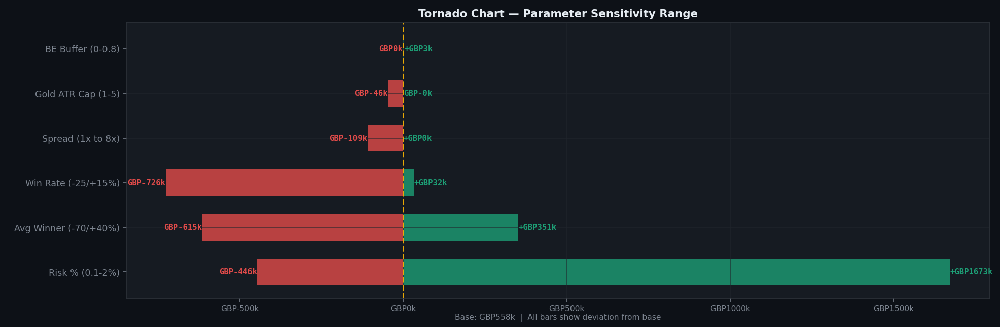

Model validation at scale: catching four flaws before publishing a result
A rule-based model produced a trade ledger of around 12,400 records across 11 years. The headline numbers looked excellent — which is why I designed a set of tests to attack them before reporting anything. The tests found four problems, all of them in my own methodology.



The analysis
- Structured an 11-year trade ledger of ~12,400 records — date, instrument, direction and outcome per row — as the dataset for every test that followed.
- Built the metrics layer: equity curve, maximum drawdown, risk-adjusted return, profit factor, win rate and monthly breakdowns.
- Ran a Monte Carlo resample across 5,000 simulations, so the headline figure is a distribution of possible outcomes rather than one path that happened to occur.
- Tested every input assumption across a range of values to see which ones the result actually depended on, ranked in a tornado chart.
- Built a correlation matrix of monthly returns to test whether six instruments were six independent bets. Two moved together — so the diversification was thinner than the headline suggested.
What the validation caught
- Lookahead bias. The daily filter used
resample('D').last()without.shift(1), letting the model see the same day's closing value before deciding. It needs the previous day's. - A test that didn't test what it claimed. My bias check removed records near the session start instead of re-running the pipeline, so it couldn't detect the issue above.
- A circular cost assumption. Baseline cost was defined as a percentage of average loss, so "survives 10× costs" only meant surviving a figure I'd set myself.
- A train/test split that wasn't blind. Records were sliced by date from one run whose rules were chosen using the full period, overstating out-of-sample performance.
What I'd do differently
- Fix the bias, then re-run end to end. Add
.shift(1)to the daily filter and rebuild the full result set. Until that's done, every figure downstream is unproven — so this is the first job, not a refinement. - Rebuild the bias test properly. The check should re-run the pipeline with and without the fix and compare outputs, rather than filtering records out of a result that already exists.
- Ground the cost assumptions in real data. Replace the self-referential baseline with observed spread and execution costs, so the stress test measures something external to my own model.
- Make the split genuinely blind. Re-select parameters inside each training window before testing on the next one, rather than choosing rules once across the whole period.
My expectation is that a corrected version produces a substantially weaker result. That's the point of doing it.
Why this is the project I lead with. A result this clean usually means the test is wrong, not that the signal is real. Finding that out myself — rather than having it found for me — is the part of analysis I'd want a team to rely on me for.
How it was built. The Python was written with Claude, Anthropic's AI assistant. What's mine is the analysis: designing the tests and deciding what would count as failure, structuring the data, debugging across many iterations, interpreting the output, and identifying the four issues above. I can read and modify the code, and I'm working towards writing it unaided.